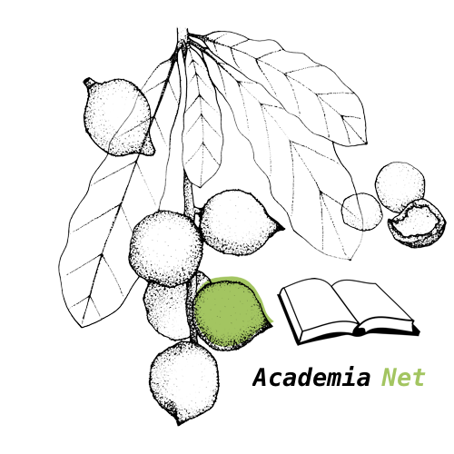

Welcome to Academia Net, {{name}}
To Get started, click the search tab and begin your search!

Academia Net is a project created by senior undergraduate students for Dr. Qusay Mahmoud at the University of Ontario Institute of Technology in Oshawa, Ontario. For more information, check out the "About" tab.